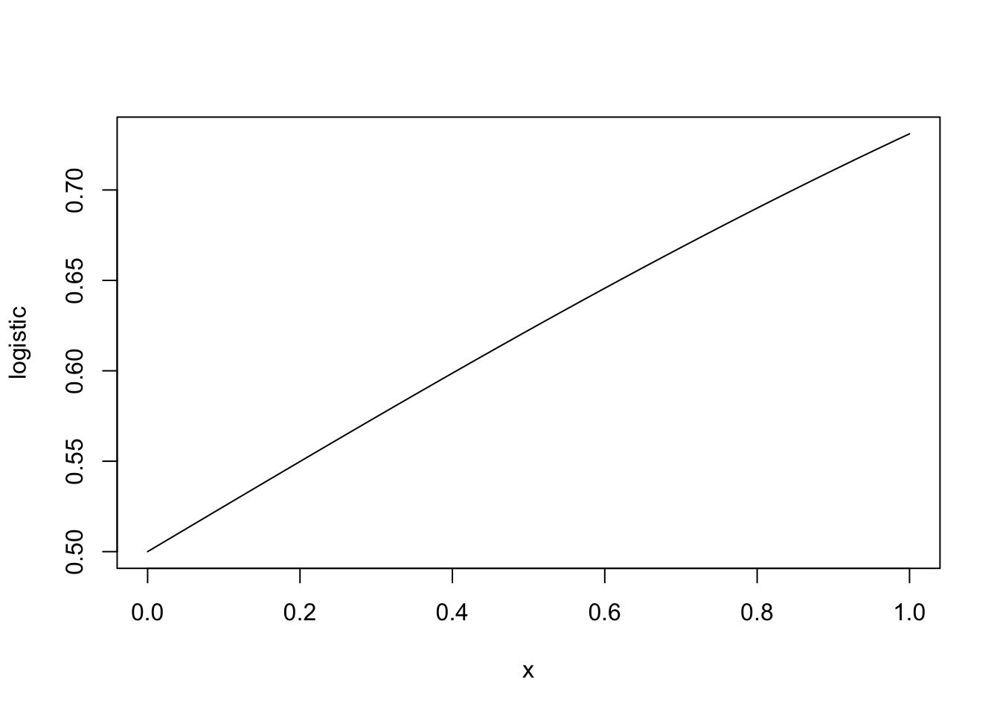
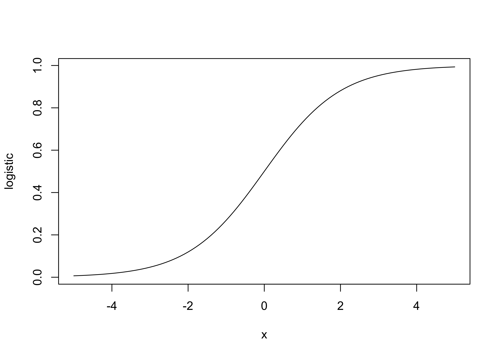
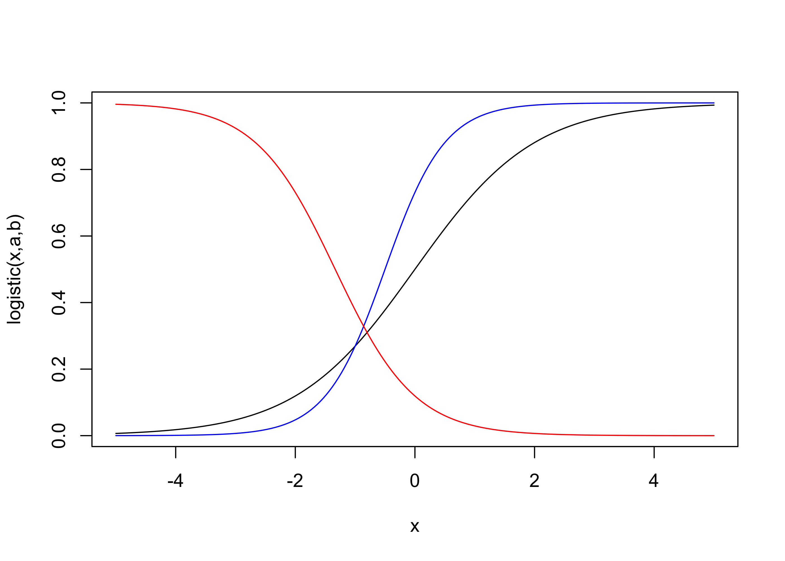
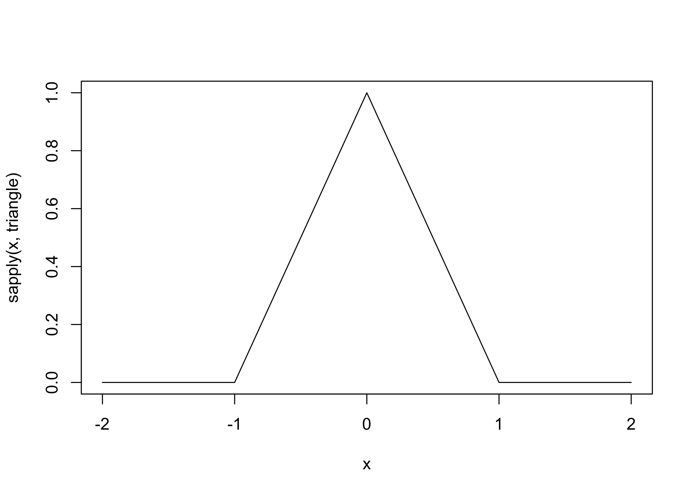
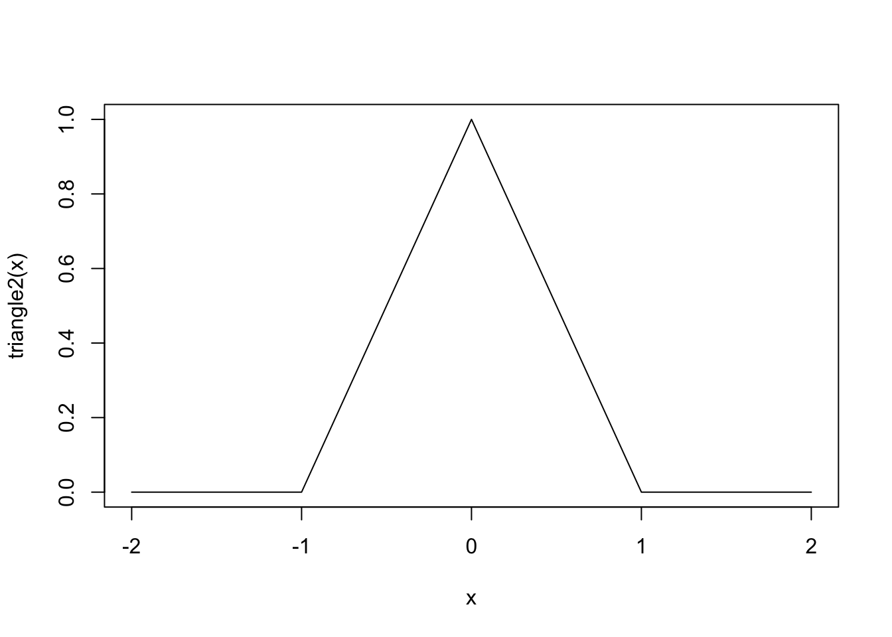
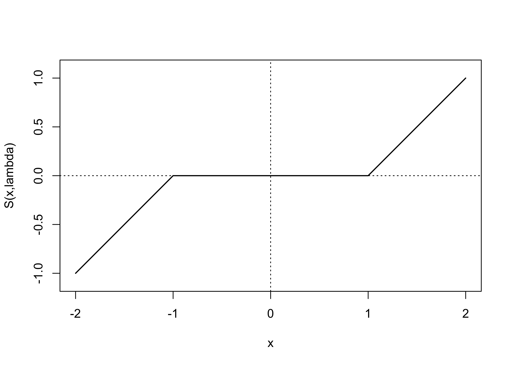

is.function(mean)[1] TRUE$$
$$
An essential part of programming is learning how to write original functions so that other people or you yourself can use them.
A function in R is a type of object, and we can create new functions just as we can create new vectors or matrices:
is.function(mean)[1] TRUEWe can create a new function by using the function() command. The code below defines a function called logistic given by \[
f(x) = e^x/(1 + e^x)
\] and evaluates it at \(x = 1\).
logistic <- function(x) exp(x)/(1 + exp(x))
logistic(1)[1] 0.7310586We see that to define a function with an argument x we just need to write an expression involving x after function(x).
We can plot the function with plot().
plot(logistic) # will plot over x from 0 to 1 by default
plot(logistic,xlim = c(-5,5)) # set the limits of the horizontal axis
To make the function more interesting, let’s say we want to define a function for \[ f(x;a,b) = e^{a + bx}/(1 + e^{a + bx}), \] where the user can specify the values of the parameters \(a\) and \(b\), which serve as a kind of “intercept” and “slope”. We can do this as follows:
logistic <- function(x,a,b) exp(a + b*x)/(1 + exp(a + b*x))Now we can plot a few different versions of the logistic function with different “intercept” and “slope” parameters. If a function takes more than one argument, like our new-and-improved logistic() function, we cannot plot it using plot(logistic) as we did before, because we will need to specify values for the arguments a and b. So in order to plot the function, we first have to evaluate it over a sequence of values, as below:
x <- seq(-5,5,length = 200) # make a sequence of x values
plot(logistic(x,a = 0, b = 1)~x,
type = "l",
ylab = "logistic(x,a,b)")
lines(logistic(x,a = 1, b = 2)~x, col= "blue")
lines(logistic(x,a = -2, b = -3/2)~x, col= "red")
Note that if we do not specify values for a and b, we will get an error message:
logistic(2) Error in logistic(2): argument "a" is missing, with no defaultThe error message says “with no default”. If we wish, we can set default values for the arguments a and b by setting them equal to something when we define the function:
logistic <- function(x,a = 0,b = 1) exp(a + b*x)/(1 + exp(a + b*x))
logistic(2)[1] 0.8807971Now a = 0 and b = 1 by default, so the arguments will take these values if no other values are specified.
When using a function which takes multiple arguments, such as our logistic() function which takes the arguments x, a, and b, it is not necessary to “name” the arguments when executing the function. If arguments are not named, they will be used according to in the order in which the arguments appear in the function definition.
So we get the same result from the following:
# here we name each argument
logistic(x = 1/2, a = -2, b = -3/2)[1] 0.06008665# here we do not name the arguments
logistic(1/2,-2,-3/2)[1] 0.06008665If one names the arguments, they can be put in any order:
# named arguments, given in a different order
logistic(a = -2, b = -3/2, x = 1/2)[1] 0.06008665# unnamed arguments supplied in this order give a different result
logistic(-2,-3/2,1/2)[1] 0.07585818Unless you are very confident that you know the order of the arguments in the definition of a function, it is best to explicitly name each argument.
Often we need to define functions which perform more than just one simple calculation, so they need to execute more than one line of code. We could actually break the definition of our logistic() function into multiple lines of code as follows:
logistic <- function(x,a=0,b=1){ # enclose commands in "curly" braces {}
ex <- exp(a + b*x) # make a preliminary calculation
val <- ex/(1+ex) # finish the calculation and store the result in "val"
return(val) # explicitly tell the function to return this value
}
logistic(1)[1] 0.7310586If our function requires more than one line of code, we put all the lines of code between curly braces {...}.
Note that a function does not have to return a single numeric value. We could make our logistic() function return a list of values containing the evalution of the function as well as the values of, say, the arguments a and b which were used:
logistic <- function(x,a=0,b=1){
ex <- exp(a + b*x)
val <- ex/(1+ex)
output <- list(val = val,
a = a,
b = b)
return(output)
}
logistic(1)$val
[1] 0.7310586
$a
[1] 0
$b
[1] 1If we don’t include a return() command at the end of the function, the function will return the last evaluated object. It seems good practice to include the return() function so that it is very clear to others reading the code what is being returned by the function. Note: As soon as a return() command is encountered, the function will return and “exit” the function, so it will not execute any commands after it executes a return().
We will be able to make much more interesting functions if we know how to do conditional programming, that is, if we know how to write code which will execute different actions depending on some criteria.
We’ll begin exploring conditional programming outside the context of defining functions, and one we have learned a couple of things, we will define some more interesting functions which use conditional programming.
In the following, in order to make the examples interesting, I have used a few functions we have not yet discussed: The function Sys.Date() which returns the current date; the function format(), which can be used to print dates in specified formats; the function substr() which can extract a sub-string of characters from a character string; the function cat() which prints text to the console without skipping to a new line; and the function sample() which can be used to draw entries randomly from a given vector of values. Consult the help on any of these functions if the following code becomes confusing.
First we consider a simple if/then program. We want to check if a condition is satisfied, and if it is, we want to execute some action. Here is an example:
my_birthday <- "01/15"
today <- format(Sys.Date(),"%m/%d")
if(today == my_birthday) print("It is your birthday.")The above code asks if today is my birthday, and if it is it prints a message stating the fact; otherwise nothing happens. If we want to execute more actions when the condition is satisfied, we can put these as separate lines of code between curly braces {...} after the if() statement:
my_birthday <- "08/28"
today <- format(Sys.Date(),"%m/%d")
if(today == my_birthday){
lucky_number <- sample(1:12,1)
print(paste("It is your birthday. Your lucky number this year is ",lucky_number,".", sep = ""))
}Now, if it is your birthday, you are given a randomly generated lucky number, presumably to guide your steps in the coming year; otherwise nothing happens.
If we wish to give some other instructions for what should happen when the condition is not satisfied, we can use if/else conditional programming. Here is an example of how to do this in R:
my_birthday <- "01/15"
today <- format(Sys.Date(),"%m/%d")
if(today == my_birthday){
lucky_number <- sample(1:12,1)
print(paste("It is your birthday. Your lucky number this year is ",lucky_number,".", sep = ""))
} else {
print("Sorry, today is not your birthday.")
}[1] "Sorry, today is not your birthday."We do not need to stop at only two possible actions. It is possible to set up a sequence of conditions which are checked, in order, such that each one will execute if the condition is true, until the last one, which executes if none of the previous conditions was true. Here is an example:
my_birthday <- "01/15"
today <- format(Sys.Date(),"%m/%d")
today_month <- format(Sys.Date(),"%m")
if(today == my_birthday){
lucky_number <- sample(1:12,1)
print(paste("It is your birthday. Your lucky number this year is ",lucky_number,".", sep = ""))
} else if(today_month == substr(my_birthday,1,2)){
print("Today is not your birthday, but your birthday is this month.")
} else {
print("Sorry, it is not your birthday and your birthday is not this month.")
}[1] "Sorry, it is not your birthday and your birthday is not this month."Now the code asks if it is your birthday; if so, it performs some actions. If it is not your birthday, it will check if your birthday is this month; if so, it will print a message stating the fact. If it is not your birthday and it is not your birthday month, then it will print a message stating the fact.
If there are a large number of conditions to check, a cleaner way write the program is to use the switch() function. The code below gives messages pointing out some “silver lining” for those whose birthday is not in the current month.
my_birthday <- "01/15"
today <- format(Sys.Date(),"%m/%d")
today_month <- format(Sys.Date(),"%m")
if(today == my_birthday){
lucky_number <- sample(1:12,1)
print(paste("It is your birthday. Your lucky number this year is ",lucky_number,".", sep = ""))
} else if(today_month == substr(my_birthday,1,2)){
print("Today is not your birthday, but your birthday is this month.")
} else {
cat("Sorry, your birthday is not this month, but ")
switch(as.numeric(substr(my_birthday,1,2)), # get birthday month as a number
cat("January is nice and wintry."),
cat("February is not a bad month for a birthday."),
cat("at least in March you get Spring Break."),
cat("April is always good."),
cat("wildflowers should be blooming in May."),
cat("June birthdays are always a good time."),
cat("in July you can celebrate at the beach."),
cat("August will come soon enough."),
cat("September birthdays are lucky."),
cat("October is nice and autumnal."),
cat("in November you'll get Thanksgiving break."),
cat("December is everyone's favorite month."))
}Sorry, your birthday is not this month, but January is nice and wintry.It is very simple to use conditional programming statements inside a function. We use the same syntax as above.
As an example, we may wish to define a function to evaluate the piecewise-defined “triangle” function
\[ f(x) = \left\{\begin{array}{ll} 0,& x < -1 \\ 1 + x,&-1 \leq x < 0\\ 1 - x,&0 \leq x < 1\\ 0,& 1 \leq x. \end{array}\right. \] Here is how we can do it:
triangle <- function(x){
if( (x >=-1) & (x < 0) ){
val <- 1 + x
} else if( (x >= 0) & (x < 1) ){
val <- 1 - x
} else {
val <- 0
}
return(val)
}
triangle(1)[1] 0triangle(0)[1] 1triangle(1/2)[1] 0.5triangle(-1/2)[1] 0.5With our function defined as it is, we will run into trouble if we try to evaluate it on a vector:
x <- seq(-2,2,by = .1)
triangle(x)Error in if ((x >= -1) & (x < 0)) {: the condition has length > 1The problem is that if() can only accept a single logical value. What is happening is that when we feed a vector into our triangle() function, the first condition, which is (x >=-1) & (x < 0), results in a vector of TRUE or FALSE values, and if() cannot handle this.
A way around this is to apply the triangle() function to each value in the vector x separately, without feeding the whole vector x into the function at once. This can be done with the sapply() function. The documentation for sapply() is somewhat intimidating, but here is how we can use it:
sapply(x,triangle) [1] 0.0 0.0 0.0 0.0 0.0 0.0 0.0 0.0 0.0 0.0 0.0 0.1 0.2 0.3 0.4 0.5 0.6 0.7 0.8
[20] 0.9 1.0 0.9 0.8 0.7 0.6 0.5 0.4 0.3 0.2 0.1 0.0 0.0 0.0 0.0 0.0 0.0 0.0 0.0
[39] 0.0 0.0 0.0These are the desired function evaluations. Now we may make a plot of the triangle() function:
plot(sapply(x,triangle)~x,type = "l")
It is often possible to bypass some of the tedium of progamming piecewise functions by taking advantage of the fact that logical vectors are coerced to numeric vectors by arithmetic operations. We can, for example, write a function equivalent to the triangle() function as follows (study it closely!):
triangle2 <- function(x) ((x >=-1) & (x < 0))*(1 + x) + ((x >= 0) & (x <= 1))*(1 - x)
x <- seq(-2,2,by = .1)
plot(triangle2(x)~x, type = "l")
The nice thing about triangle2() is that it can be evaluated on a vector, so we do not need to use sapply() to evaluate it on each entry of x separately.
Suppose I want to evaluate a condition for each entry of a vector and return one of two values depending on whether the entry meets a condition. For example, I want to evaluate scores as a “pass” or a “fail”, where a “pass” is earned by a score greater than or equal to 70. This could be done as follows:
# some scores
scores <- c(75.7, 64.1, 88.4, 59.2, 86.9, 67.5, 83.8, 86.6, 73.1, 65.2)
# a function to decide whether a score is a pass or fail
pf <- function(score){
if(score >= 70){
val <- "pass"
} else {
val <- "fail"
}
return(val)
}
# to find which scores are passing and failing, we must "sapply()" the function to the vector:
sapply(scores,pf) [1] "pass" "fail" "pass" "fail" "pass" "fail" "pass" "pass" "pass" "fail"The ifelse() function provides a much easier way to perform the above. It evaluates a condition on each entry of a vector and returns a vector of equal length with each entry equal to one or the other of two provided values:
ifelse(scores >= 70, "pass","fail") # "pass" if TRUE, "fail" if FALSE [1] "pass" "fail" "pass" "fail" "pass" "fail" "pass" "pass" "pass" "fail"Practice writing code and anticipating the output of code with the following exercises.

x, returns the middle value of x if x has an odd number of entries but returns the midpoint between the middle two values of x if x has an even number of entries (this is one way to define the median).x and y containing the values of two random samples \(X_1,\dots,X_n\) and \(Y_1,\dots,Y_m\) and returns a list containing the the two sample sizes \(n\) and \(m\), the two sample means \(\bar X_n\) and \(\bar Y_m\), the two sample variances \(S^2_X\) and \(S_Y^2\), the pooled sample variance \[
S^2_{\operatorname{pooled}} = \frac{(n-1)S^2_X + (m-1)S^2_Y}{n + m - 2},
\] and the test statistic of the pooled-variance two-sample t-test \[
T_{n,m} = \frac{\bar X_n - \bar Y_m}{S_{\operatorname{pooled}}\sqrt{1/n + 1/m}}.
\]Try to understand exactly what the following code chunks are doing.
expcdf <- function(x) (1 - exp(-x))*(x > 0)
plot(expcdf,xlim = c(-1,4),ylab = "cdf",xlab = "x")today <- Sys.Date()
dow <- weekdays(today) # weekdays() function pulls the weekday from a date
wkdays <- c("Monday","Tuesday","Wednesday","Thursday","Friday")
if(any(dow == wkdays)){
print("Keep working.")
} else {
print("Take a break.")
}rg <- function(x){
n <- length(x)
x <- sort(x)
val <- x[n] - x[1]
return(val)
}
x <- c(3,8,2,-3,7,-9)
rg(x)trm <- function(x,alpha){
n <- length(x)
x <- sort(x)
tr <- floor(alpha*n)
l <- tr + 1
u <- n - tr
val <- mean(x[l:u])
return(val)
}
x <- c(-5,9,-9,-1,1,7,11,5,3,-7,-3)
trm(x,0.1)